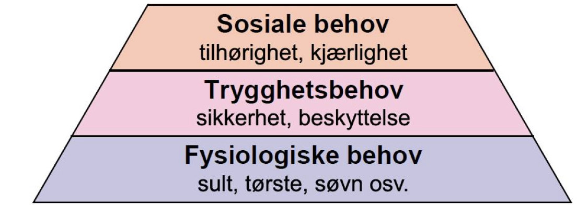
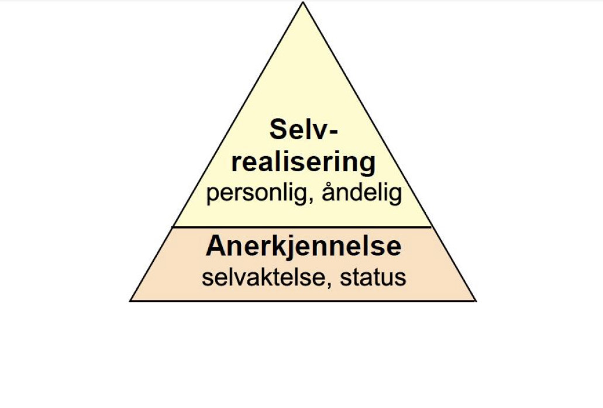
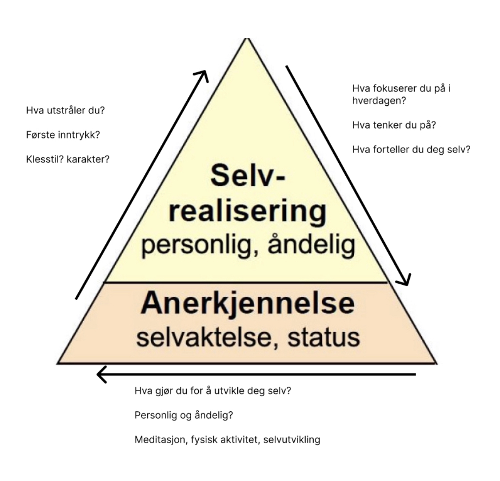

Motivasjon
Motivasjon er definisjonen på en tilstand som setter i gang og styrer adferden til mennesket, og som får oss til å vedlikeholde aktiviteten og holde den ved like (Manger 2015, s.134).
Det skilles ofte mellom ytre motivasjon og indre motivasjon i motivasjonspsykologien. Indre motivasjon er når personens motivasjon kommer innefra. Når det er en interesse, nysgjerrighet, utfordringer og glede ved aktiviteten. Den ytre motivasjonen er basert på det ytre.
Maslows behovsteori
Abraham Maslow (1908–1970) mente at mennesket er aktivt og handlende, har en fri vilje og har behov for åndelig vekst. Han utarbeidet en teori for å forklare de grunnleggende behovene vi mennesker har. Dette er behov som Maslow mente er gyldige i ulike situasjoner, og som kan forklare fellestrekk ved menneskers atferd.Maslows teori kan derfor ikke brukes til å forklare spesifikke handlinger i konkrete situasjoner, men den kan gi oss en forståelse av hvilke grunnleggende behov vi mennesker har, og motivasjonen vår til å få disse behovene tilfredsstilt.
Behovspyramiden
Maslow skiller mellom to hovedtyper behov: mangelbehov og vekstbehov. Han stiller opp de grunnleggende behovene våre i et behovshierarki som ofte framstilles i form av en pyramide. Nederst i pyramiden finner vi mangelbehov. Det er behovene vi må dekke for å overleve, bli tilfredsstilt og ha det bra. Øverst i pyramiden finner vi vekstbehov. Mangelbehov (de 3 nederste lagene)
Mangelbehovene består av fire grupper behov: fysiologiske behov, behov for sikkerhet og trygghet, behov for tilhørighet og kjærlighet og behov for å bli verdsatt og for å verdsette seg selv. Dersom vi ikke får tilfredsstilt disse mangelbehovene, vil det påvirke det fysiske og psykiske velværet vårt. Vi vil derfor være motivert for og ha oppmerksomheten vår rettet mot å få tilfredsstilt mangelbehovene.
Vekstbehov (de 2 øverste lagene)
Når mangelbehovene er tilfredsstilt, fører det til at motivasjonen knyttet til disse behovene avtar, og vekstbehovene blir mer framtredende. Vi får behov for å gjøre ting, utforske, få innsikt i verden rundt oss, føle oss nyttige og behov for å gjøre noe for andre. Vi får da behov for å kunne utvikle våre talenter, kunnskaper og ferdigheter. Dermed beveger vi oss oppover i pyramiden, til det Maslow kaller vekstbehov. Vekstbehov inkluderer behov for kunnskap og forståelse, estetiske behov og behov for selvaktualisering (å utvikle mulighetene sine). I motsetning til mangelbehovene kan vekstbehovene aldri bli helt tilfredsstilt. Det er slik at jo mer kunnskap vi får, desto sterkere føles behovet for å få mer kunnskap og mulighet til selvutfoldelse.Behov for selvrealisering
Når de grunnleggende mangelbehovene er tilfredsstilt, vil nysgjerrigheten, utforskertrangen og skapergleden bli vekket. Vi får et behov for å utvikle potensialet vårt og kunnskapene og ferdighetene våre. Dette gir grunnlag for ny vekst og utvikling. Hos barn og unge handler det om at når mangelbehovene er tilfredsstilt, kan de trygt utforske verden. De opplever å ha energi, overskudd og selvtillit til å utforske og gjøre nye erfaringer som gir ny kunnskap og ferdigheter. Føler barnet seg anerkjent av voksne, kan det bidra positivt for motivasjon og engasjement. Motsatt kan barn som ikke opplever seg anerkjent, og som møter oppgaver de ikke mestrer, ha mindre motivasjon.
Kritikk av Maslows teori
Mange har kritisert Maslows modell. Noen studier viser at selv om de grunnleggende behovene våre ikke er ivaretatt, vil behovet for selvrealisering og anerkjennelse likevel være viktig. Vi vil også rangere behovene ulikt. For noen kan sikkerhet knyttet til det fysiske miljøet være viktigst, mens for andre kan behovet for tilhørighet være viktigst. Selv om Maslows teori er kritisert, gir den oss viktige perspektiver på hvordan ulike behov påvirker motivasjonen og atferden vår. Teorien har også fått kritikk for å i hovedsak være tilpasset det amerikanske samfunnet og vil derfor være annerledes i for eksempel Midtøsten eller Asia. Der kulturforskjellene er grunnleggende annerledes må modellen tilpasses til nye behov.
Bruk av behovspyramiden
Man kan altså bruke pyramiden for å få et overblikk over hvor man er i livet, hva man søker etter og hva som er grunnlaget for ens motivasjon. Teorien er ellers mye brukt innenfor bedrifter og arbeidsliv, for å kunne optimere en arbeidsplass.
De ulike behovene og stegene på pyramiden kan enkelt omgjøres til praksis.
Modellen kan altså tilpasses og brukes i ulike sammenhenger. Du kan selv prøve å tilpasse den til noe du kan bruke, og finne ut hvilket stadium du er på.
Selvrealiseringspyramiden
Johannes Marseth (1988–) Har dykket inn i teori om motivasjon, med Maslows behovspyramide som utgangspunkt.
Det moderne mennesket, særlig i Vesten og Europa er veldig ofte født med mangelbehovene dekket.
Selvrealiseringspyramiden tar for seg de 2 øverste lagene i Maslows behovspyramide, (vekstbehov.) Ideen er rett og slett å illustrere på en enkel måte hva som er viktig å fokusere på, når man skal realisere seg selv. Man kan aldri mette vekstbehovet helt, Vekst motiverer for mer vekst.
Alle fysiologiske behov er dekket, hva gjør jeg nå?
Det personlige og åndelige ved mennesket. Som for eksempel: Moral, etikk, kreativitet, spontanitet, problemløsning, verdenssyn, karakter, talent.
Det er mange elementer vi kan putte inn i den øverste boksen «selvrealisering» i Maslows behovspyramide.
Ok, Så du har kommet deg på toppen av pyramiden og er klar for å realisere deg selv. Hva nå?
For å gå nærmere inn på dette med selvrealisering, så har jeg laget en egen pyramide for å illustrere:
